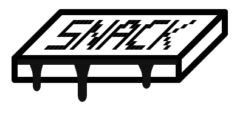

CONDIMENTS FOR SNACK

A little
extra.
Drenched to your own taste.
More ways to Snack.
Independent additions.
Whole Condiments. One folder each.
Whole Condiments. One folder each.


Drenched to your own taste.
More ways to Snack.
An image background for any Snack.
Fill, fit, or stretch it your way.
Own HTML, CSS, scripts, catalog, and agent skill.
You, one agent, or several.
Messages, files, replies, and reactions.
Own HTML, CSS, scripts, catalog, and agent skill.
Native Chromium tabs for people and agents.
Read, interact, capture, export and explore.
Shared Snack browser. Independent, complete Condiment.
Connect this catalog for all three, or copy one Condiment’s source above.
https://anticontainmentsystem.github.io/Snack-mods/Serving Tray → Mods → Mod connections.
Paste the source URL.
Install a Condiment and review what it may use.
Each Condiment becomes its own Snack.
Every Condiment is complete in its own folder. Take one, take several, or build your own. Optional agent guides and skills help your agents understand what’s available.
Build a Condiment ↗About Snack · Privacy · Testing terms
Snack is an Electron and Chromium desktop operating environment. Its independent windows are called Snacks: live HTML, websites, images, editors, launchers and interfaces supplied by third parties. It knows which monitor each Snack occupies, its position and orientation, its source, and the controls it currently offers. A Condiment is a separately installed extension that builds on that environment through a permission-checked SDK. It does not modify Snack’s installed code.
This repository is both an optional testing catalog and a developer entry point. Wallpaper and Simple Agent Chat are examples, not the limits of the platform. You own your interface, icon, Store title and artwork, code, custom commands, background entry and optional agent skills. Snack supplies the host, connected services, discoverable controls and enforced permissions.
Main Snack’s Pasta panel is a scratchpad. Main Pasta Snacks are live views of it. A saved ChipClip is a separate source with its own identity and live updates. A Condiment can inspect and organize sources, create editors, launch previews or build an entirely different library interface.
Snack Bars are named launchers, each with up to three main chips. ChipClips can also remain unassigned. Serving Tray manages the library, connections, agents, Vault, General settings and Condiments. A Condiment may compose these shared operations without duplicating the built-in UI.
A monitor map exposes current Snacks, bounds, orientation, visibility, minimization, pinning and source identity. Discover a Snack’s controls before acting. Build spatial dashboards, launchers, orientation-aware tools, workspace organization or multi-monitor workflows.
HTML documents have tabs, revisions, live linked windows and conflict handling. Read the current document/revision, apply an edit, handle conflicts, and verify the live result. A publishing tool can combine editing, previewing, saving a ChipClip and committing to a chosen repository.
Website Snacks use Chromium browser views with navigation, history, reload, zoom, capture and persistent sessions. Managed media uploads support images and shared attachments. Presentation layers can style approved Snacks without hardcoding your theme or wallpaper into the host.
Connect accounts separately. Approved actions can use GitHub, chat/agent inboxes, tunnels and other existing connectors. A module can coordinate several agents or call another enabled module’s declared command. Account permissions and caller permissions still apply.
| Build an interface for… | Compose these existing primitives | Verify the outcome |
|---|---|---|
| A spatial command center | map, snack-controls, window controls, source discovery and Snack Bar actions. | Re-read awareness after moving, focusing or launching a Snack. |
| A publishing workbench | studio-state, studio-open, studio-update, studio-launch, studio-save, selected GitHub connection and github-commit. | Use document revisions and expected repository SHAs; saving locally is not a repository commit. |
| Theme, wallpaper or presentation tools | Chunked managed media uploads, presentation-set and presentation-state. Your own code creates the CSS layers. | Read back the layer and inspect the target. Disable/remove only the caller-owned layer. |
| An agent team room | chat-agents, chat-create, chat-send, chat-inbox, replies, reactions, managed attachments and optional guides. | Read the conversation. An inbox participant must actually run and reply; a listed agent is not proof a model is active. |
| A service dashboard or API integration | Author-declared public HTTPS origins, separate owner approval and condiment-http; combine the returned data with permitted Snack actions. | Check HTTP status, parse the response and read back changed Snack state. Requests do not follow redirects. |
| A background receiver or scheduled poller | An optional sandboxed background HTML entry, timers, private JSON state, handleCommand and the approved HTTPS bridge. | Inspect condiment-runtime. It runs while Snack runs; closing a visible UI need not stop it. It is not an OS service or an exactly-once job queue. |
| A new tool another mod can use | Manifest commands, JSON input schemas, handleCommand, condiment-agent-guide and condiment-command. | Return structured results. Every nested host call still requires the current approved controls. |
| A private-file review workflow | Managed attachment upload/read, conversation-scoped file access, text/PDF/Office/ZIP inspection and chosen agent recipients. | Use the returned managed IDs; arbitrary host paths are not equivalent to uploaded attachments. |
Full Snack control: tools, actions, terminal, mod-to-mod commands and protected Main panels ↗ · Shared host controls and monochrome UI kit ↗
await SnackCondiment.call('map')The injected SDK calls the same registered implementation used by Snack’s UI and API/MCP. It returns a Promise with a result or an explicit error.
SnackCondiment.onChange(refresh)Snack announces that shared state may have changed. Re-read only what you need. Notifications are coalesced, not a durable event history or one callback per action.
SnackCondiment.handleCommand('inspect', handler)An agent, local client or permitted Condiment discovers your manifest schema and invokes condiment-command. Your UI or approved background entry receives it and returns JSON.
Use pull calls to read awareness, source content, documents, browser state, library contents and connection status. Use push/update calls to change a document, save a source, send a message, apply a layer or commit. A call’s returned result is its acknowledgment. Email’s built-in connector additionally has durable received/result job records; the generic SDK does not pretend every action has that durable receipt system.
Use HTML, CSS and JavaScript, or compile a frontend framework into those files. Keep all runtime files and your icon together. The host injects window.SnackCondiment; you do not paste an agent credential into the module.
my-condiment/
snack-condiments.json
index.html
styles.css
script.js
icon.svg
worker.html optional background entry
README.md
skills/SKILL.md optional agent guide{
"version": 1,
"name": "Your collection title",
"publisher": {"name": "Your publisher name"},
"condiments": [{
"id": "my-workspace-tool", "name": "My Workspace Tool",
"description": "Explain what your tool actually does.",
"version": "1.0.0", "entry": "index.html", "icon": "icon.svg",
"permissions": {"awareness": "read", "windows": "read", "condiments": "control"},
"commands": [{"name": "inspect", "description": "Return current workspace state",
"inputSchema": {"type": "object", "properties": {}, "additionalProperties": false}}]
}]
}const snack = window.SnackCondiment;
const output = document.querySelector('#output');
async function refresh() {
try { output.textContent = JSON.stringify(await snack.call('map'), null, 2); }
catch (error) { output.textContent = error.message; }
}
const unsubscribe = snack.onChange(refresh);
snack.handleCommand('inspect', () => snack.call('map'));
refresh();Your collection’s root name, publisher and description identify the catalog. Each module owns its name, icon, links, tags, optional Store HTML card and optional window dimensions. Snack must not know your extension’s brand or customize its behavior by its ID. Optional agent instructions and skills explain intent, inputs, verification and failure handling; they cannot grant permissions.
Condiments can host native Chromium tabs; read and interact with pages; use guest-page JavaScript and local DevTools controls; find text; capture PNGs and PDFs; manage downloads, supported extensions, permissions and cache. Snack Browser demonstrates branded Home/search, menu-based Settings, Tools and Extensions pages, vertical or horizontal tabs, page favicons, bookmarks, history and the shared human/agent workspace.
Build your own UI, commands, skills, background receivers and service calls. Use managed media, private Condiment storage, live Pasta Studio editing, Snack awareness, presentations, tunnels and connected GitHub publishing. Condiment commands connect back to agents through the same HTTP API and MCP. Review controls per Condiment; local and remote permissions remain enforced.
Simple Agent Chat also demonstrates selectable, scrollable messages, transcript copying, shared attachments, replies, reactions and multiple agents. See the current browser guide for exact behavior and extension-engine limits; the generated action reference lists all available schemas.
To call your service, declare exact origins such as "network": {"origins": ["https://api.example.com"]}. Request condiments: control. The owner must separately select each origin in the review dialog; unchecked origins are denied. Call through the bridge:
const response = await snack.call('condiment-http', {
url: 'https://api.example.com/status', method: 'GET'
});
if (!response.ok) throw new Error('Service returned HTTP ' + response.status);
const data = JSON.parse(response.body);The bridge supports GET, HEAD, POST, PUT, PATCH, DELETE and OPTIONS, bounded text bodies, public HTTPS on port 443, a 20-second request limit and 1 MB request/response limits. It validates DNS and pins the connection to the public address, rejects private/local/reserved addresses, does not follow redirects, and strips response cookies. Managed Vault secrets are not returned or automatically attached. A service’s own OAuth, webhook receiver, privileged credential binding, binary streaming or custom transport needs an explicitly designed connector; do not invent a manifest flag that bypasses the host.
To keep handlers or polling alive after your visible window closes, declare "background": "worker.html". That HTML entry gets the same SDK and sandbox. The owner separately opts into running it; it starts with Snack when enabled and stops when paused, disabled, removed or Snack exits. Your background code can register commands, use timers, approved HTTPS calls and private JSON storage. Do not implement the same side-effecting loop in both UI and background. Background presence is discoverable through condiment-runtime and condiment-agent-guide.
A separate desktop program, service or agent may use any HTTP-capable language: JavaScript, Python, Go, Rust and more. Pair it in Automation and use the endpoint and credential from its live onboarding. Local clients and remote clients have different grants. Condiment pages use their injected SDK; they do not need a bearer token or direct browser-origin access to these endpoints.
| Endpoint | What it receives or returns |
|---|---|
GET /api/tools | Currently allowed tool names and input schemas. |
GET /api/capabilities | Capability revision, actions, features and current connection grants. |
POST /api/call | {"name":"TOOL_NAME","arguments":{}}; success contains result. Tools such as snacks_action wrap shared actions. |
POST /mcp | JSON-RPC MCP initialize, tools/list and tools/call using the same action registry and permissions. |
// External client: use your paired values, never hardcode someone else's credential.
const headers = {Authorization: 'Bearer ' + process.env.SNACK_AGENT_TOKEN,
'Content-Type': 'application/json'};
const base = process.env.SNACK_API_BASE;
const discovery = await fetch(base + '/api/tools', {headers});
const awareness = await fetch(base + '/api/call', {method: 'POST', headers,
body: JSON.stringify({name: 'snacks_awareness', arguments: {}})});
const result = await awareness.json();{"jsonrpc":"2.0","id":1,"method":"tools/call","params":{
"name":"snacks_action","arguments":{
"action":"condiment-command","arguments":{
"id":"DISCOVERED_CONDIMENT_ID","command":"inspect","arguments":{}}}}}Discover first, read awareness, then act. Check HTTP status and action errors; an MCP tool may return isError: true. Commands time out after 30 seconds and return at most 1 MB JSON. Revision-aware Studio writes and expected-SHA GitHub commits help avoid overwriting concurrent changes. After an uncertain write, read state before retrying. MCP currently returns JSON responses, not a GET/SSE event stream; rediscover when reconnecting or permissions change.
Optional external connections add owner-approved pairing, Vault-managed credentials, independent background connections, agent identities, messages, arbitrary callable capabilities and events. Capability discovery is always available and can grow with your app. Use only the functional pieces you need; existing Condiments need no new declaration, server or key.
Try Picnic Lab. A clearly labeled local simulation of an external page and scripted agent, with events, commands, threaded replies, duplicate delivery, agent handoffs, and batched notifications. Humans and approved agents use the same handlers. Optional real Snack actions and a selected real agent make the round trip tangible. No external service, account or key required; not bundled into Snack.
This searchable reference is generated from Snack’s shared registry. It includes each action’s schema, area, access level and owner-only status. It is a published snapshot; the installed app’s live discovery is authoritative. An owner-only action appearing here is not permission for a Condiment to call it.
Loading generated reference…
Condiment code is isolated HTML/CSS/JavaScript, with no Node require, OS shell, arbitrary disk paths, raw sockets, direct network fetch or inbound HTTP listener. Use managed file uploads, host service actions and the approved HTTPS bridge. An independently connected authenticated process can implement additional transports through the external API; it does not become sandbox code just because it belongs to the same project.
Background runtimes are now available, and optional external connections now include scoped durable inbox/outbox receipts, connection-bound jobs and explicit replay recovery. An unrestricted global workflow scheduler, native plugin execution, raw secret retrieval and automatic credential brokerage for every unrelated service remain separate concerns. Those are separate platform primitives, not promises hidden in an example. Runtime changes use the same registry, live permissions and API/MCP onboarding, with tests. Disabled extensions cannot keep running. New versions require a fresh control review.
Design a Condiment around what it receives, what it changes, what it returns and how the user verifies it. Start from the examples, the complete authoring guide and live capability discovery. Your module can be a workbench, receiver, service dashboard, agent room, launcher, visualization or a tool nobody has thought of yet.